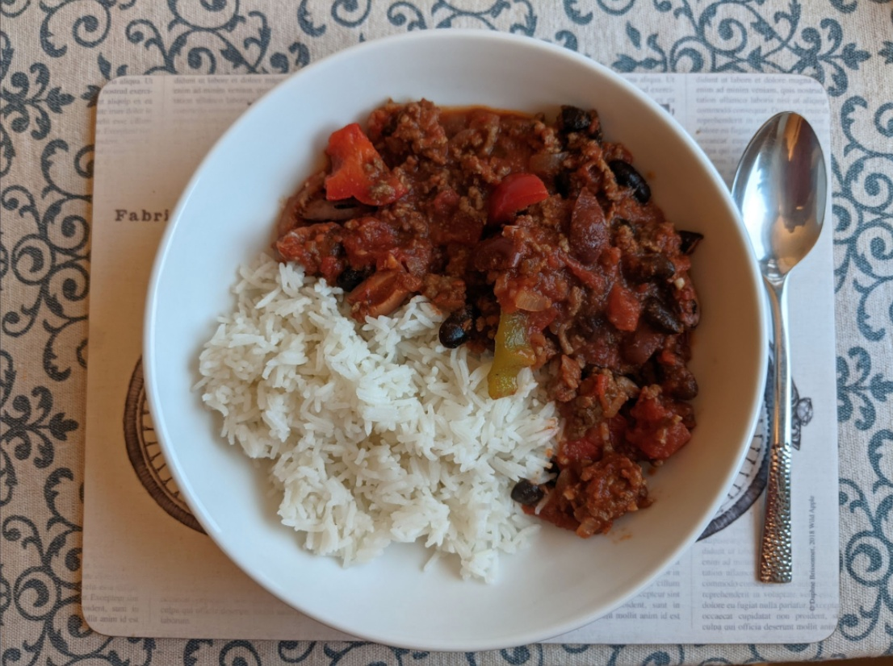

Chilli con carne
Mmmmm...

Ingredients
- 1 Tbsp olive oil
- 500g beef mince
- 1 onion, diced
- 1 green pepper, diced
- 1 red pepper, diced
- 4 cloves garlic, minced
- 1 tsp cumin
- ½ tsp chilli powder (at most)
- ½ tsp sea salt
- ½ tsp ground black pepper
- ½ tsp dried oregano
- ½ tsp paprika
- 2 cans chopped tomatoes
- 200g passata
- 1 cup black olives, sliced
- 125g dried beans of choice (or 1 tin)
- Optional garnishes: cheddar, spring onions, Greek yoghurt
Instructions
- Heat olive oil in casserole pot over medium/high heat, then add onion and cook until
transparent.
- Add mince and cook until browned.
- Add the peppers, garlic and all of the spices; mix and cook until peppers soften (approx. 10
minutes).
- Add chopped tomatoes, passata, olives and beans and bring to the boil. Reduce to a simmer, cover
and cook for 10 minutes, stirring occasionally.
- Serve with rice and toppings of your choice.
Serves 5 - 6.
Inspired by this recipe.